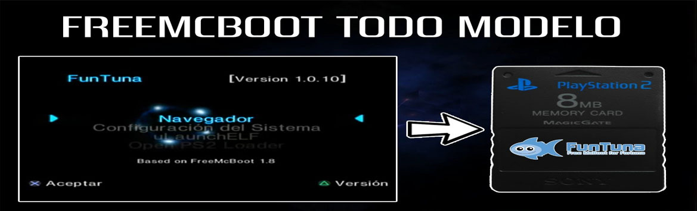
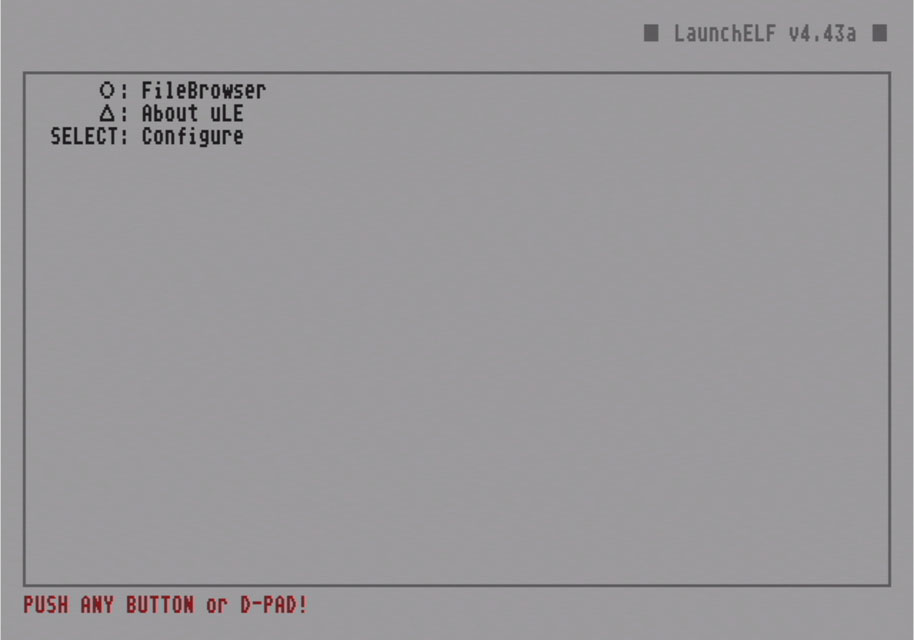

PS2 Temas OPL

Para esta Guia
Requisitos para este tutorial
- USB en formato FAT32
- Un sistema Windows 7 o superior

Para Empezar este Tutorial
- Para comenzar descargamos el archivo
- Y lo descomprimimos y nos queda una carpeta
THMcon todos los temas dentro - Copiamos la carpeta THM dentro de la raíz de nuestra memoria ej: ?:nombre de la carpeta donde le símbolo ? representa la letra de nuestra unidad
- Y estaría listo
- Una vez listo vamos a nuestra PS2 abrimos el ulaunchelf 
- Para copiar nuestros temas (para el menú es y seleccionamos copy para copiar y Paste para pegar)
- PS2 Fat
- Si lo copiamos al disco duro interno de la consola PS2
- Lo copiamos hdd0:/+OPL/ dentro encontraremos la carpeta
THMy listo - memory card PS2
- al copiar la información a nuestra memory card solo podremos pasar entre 1 a 2 a nuestra memoria
- la ruta en nuestra memory card es mc0:/THM/ dentro copiamos el tema que nos guste
- y listo
- Para nuestra USB
- Solo al copiar la información a la memoria estaría listo
- Una vez en terminado abrimos OPL
- Presionamos start para entrar al menú
- Y nos vamos a Display Settings y en Theme
- Escogeremos nuestro tema que más nos guste
- Le damos a OK y Save Changes
- Y estaría listo

×